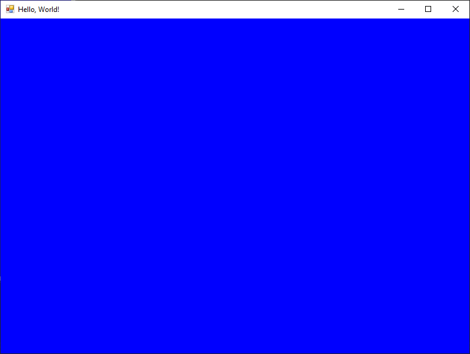

Форма¶
Форма представља прозор у GUI апликацији. Када креираш нови Windows Forms App
пројекат, аутоматски се креира и једна форма која се зове Form1.

Класа Form припада именском простору System.Windows.Forms односно, склопу
System.Windows.Forms.dll. Детаљан опис својстава, догађаја и метода класе
Form налази се у званичној
документацији.
Има их много и нема потребе наводити их све на овом месту.
Величину, боју и остала својства и функције форме можеш подесити помоћу
својстава дефинисаних у класи Form. Својства форме Form1 можеш мењати у
Properties прозору када је Form1 у фокусу, или у самом коду.
На пример, нека је задатак да се форма Form1 зове frmGlavna, да у њеној
насловној линији пише Hello, World!, да се иницијално прикаже на центру
екрана, да је димензија 800x600 пиксела и да је плаве боје. Ако знаш енглески
језик, лако ћеш пронаћи ова својства у Properties прозору. Кликни било где
на форму, како би она била у фокусу, па промени следећа својства:
име форме, својство
(Name), промени изForm1уfrmGlavna,текст на насловној линији, својство
Text, промени изForm1уHello, World!,стартна позиција, својство
StartPosition, промениWindowsDefaultLocationнаCenterScreen,димензије форме, својство
SizeпаWidthиHeight, промени816и489на800и600и на крајубоја форме, својство
BackColorпромени изControlуBlue.

Својства форме у Properties прозору организована су по категоријама:
Accessibility, Apperance, Behavior,… зато што је притиснута икона
Categorized на врху Properties прозора. Ако ти је лакше да својства тражиш
по абецедном распореду, кликни на икону Alphabetical која се налази поред
иконе Categorized. Корисно је и да знаш да се својства која си мењао
приказују задебљаним фонтом. Резултат покретања пројекта сада ће бити:

У уводној лекцији напоменуто је да су догађаји битни елементи приликом развоја
GUI апликација. Јадан од честих догађаја је „на клик”. На пример, нека
је задатак да се кликом миша на форму промени боја форме из плаве у црвену и
текст у насловној линији из Hello, World! у Welcome!. Кликни било где на
форму, како би она била у фокусу, па кликни на икону 🗲 (Events). Пронађи
догађај Click и кликни два пута брзо у поље поред. Креираће се метода
frmGlavna_Click. У телу методе неопходно је да унесеш кôд како би се
променила боја и насловна линија форме.
private void frmGlavna_Click(object sender, EventArgs e)
{
this.BackColor = System.Drawing.Color.Red;
this.Text = "Welcome!";
}
Нека је сада задатак да се дуплим кликом на форму изађе из апликације. Кликни
било где на форму, како би она била у фокусу, па кликни на икону 🗲
(Events). Пронађи догађај DoubleClick и кликни два пута брзо у поље поред.
Креираће се метода frmGlavna_DoubleClick. У телу методе неопходно је да
унесеш кôд за излазак из апликације.
private void frmGlavna_DoubleClick(object sender, EventArgs e)
{
Application.Exit();
}
У овом једноставном примеру мењао си нека својства форме и дефинисао неке догађаје. Више о својствима и догађајима форме научићеш у наредним лекцијама.
Вероватно си користио апликације у оквиру којих постоји више форми и те форме су биле различитих типова. У Windows Forms App пројектима подржан је рад са више форми, али ће то бити једна од тема у IV разреду.